Recommended: Boundary center
Final LISM Centroid Comparison
141 manually approved frames. Lower error is better.
Results
| Rank | Method | Yield | Typical error | 95% error | RMSE |
|---|
| 1 | Boundary center | 100.0% | 0.866 | 2.779 | 3.866 |
| 2 | Sustained edge | 100.0% | 0.892 | 2.779 | 3.883 |
| 3 | Drop weighted | 100.0% | 1.947 | 4.720 | 4.518 |
Typical error means median absolute error. The white dashed line in each graphic is the manual reference.
Approved frame examples
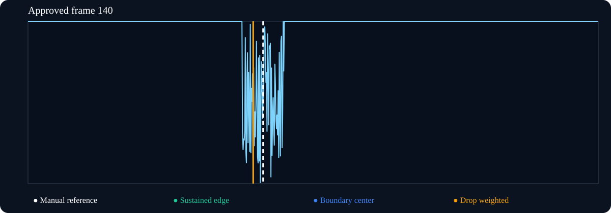
Sustained edge: -35.31 px | Boundary: -35.31 px | Drop weighted: -35.34 px
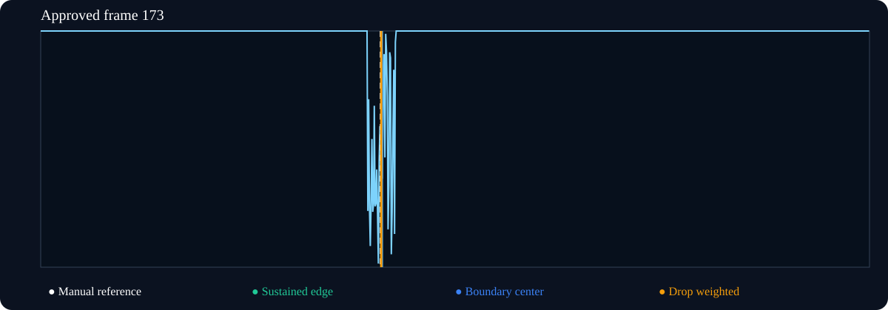
Sustained edge: +2.30 px | Boundary: +2.30 px | Drop weighted: +0.92 px
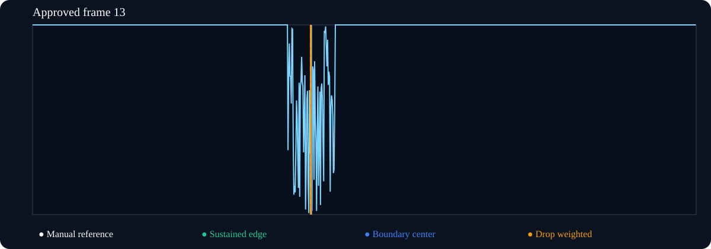
Sustained edge: +1.74 px | Boundary: +1.74 px | Drop weighted: -0.06 px
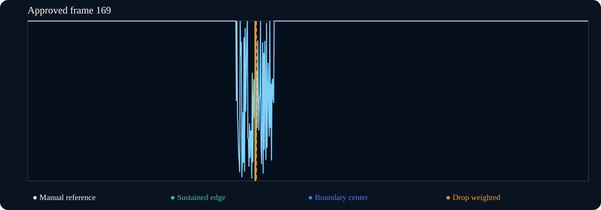
Sustained edge: -2.38 px | Boundary: -1.38 px | Drop weighted: -2.85 px
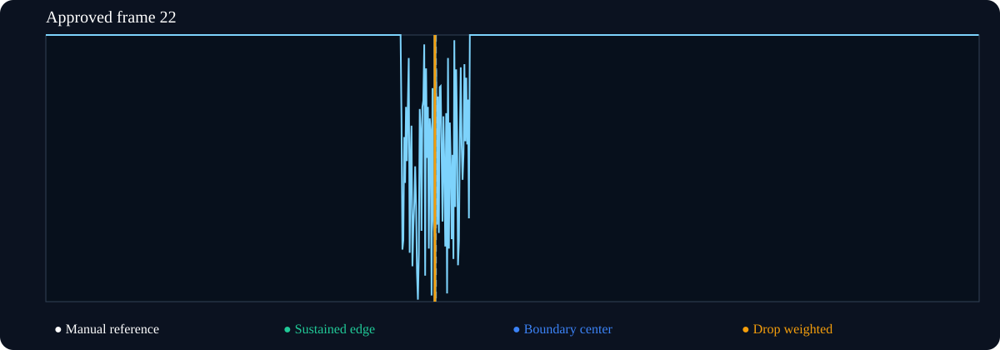
Sustained edge: -1.15 px | Boundary: -1.15 px | Drop weighted: -1.39 px
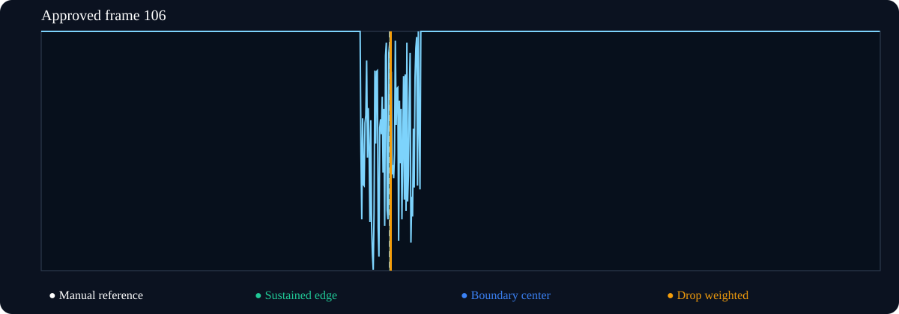
Sustained edge: +0.96 px | Boundary: +0.96 px | Drop weighted: +1.49 px
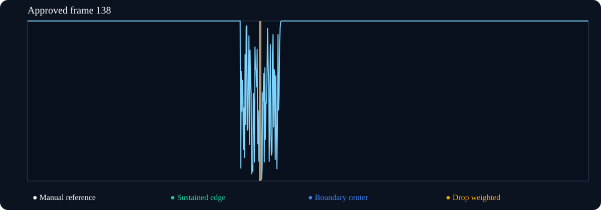
Sustained edge: +0.77 px | Boundary: +0.77 px | Drop weighted: -1.57 px
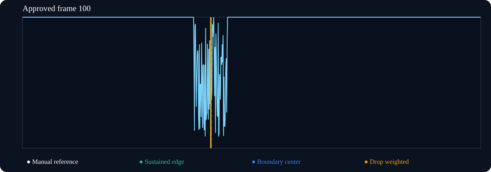
Sustained edge: -1.50 px | Boundary: -0.50 px | Drop weighted: -0.44 px
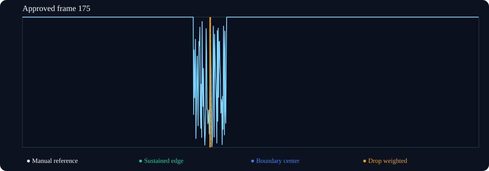
Sustained edge: -0.41 px | Boundary: -0.41 px | Drop weighted: -1.67 px
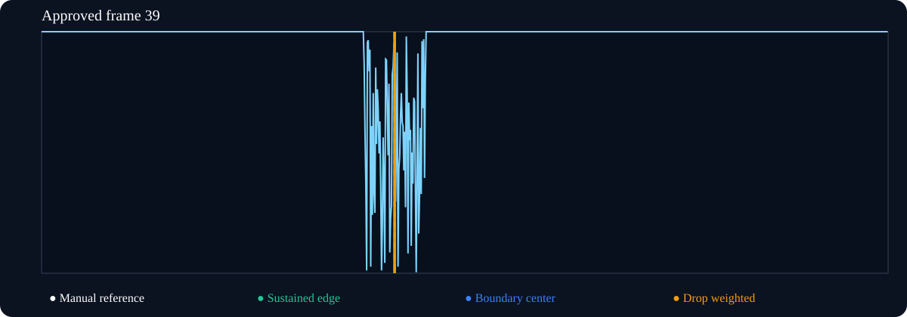
Sustained edge: -0.25 px | Boundary: -0.25 px | Drop weighted: +0.14 px
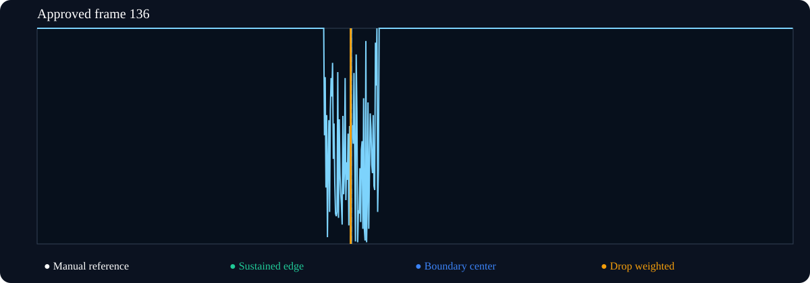
Sustained edge: -0.13 px | Boundary: -0.13 px | Drop weighted: -1.02 px
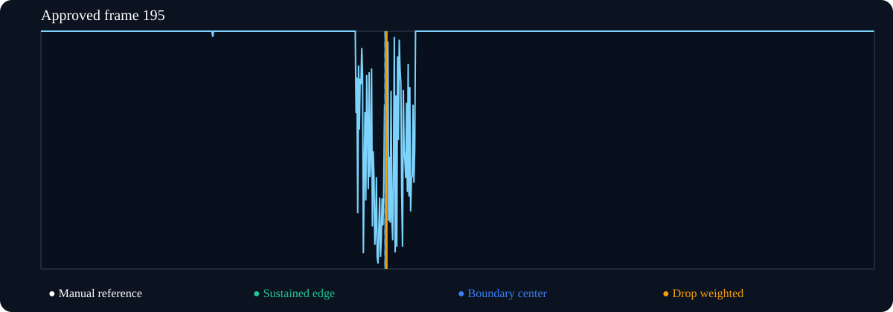
Sustained edge: -0.02 px | Boundary: -0.02 px | Drop weighted: +2.03 px
Scope
This evaluates centroid choice only. It does not validate steering timing, calibration, or motion safety.